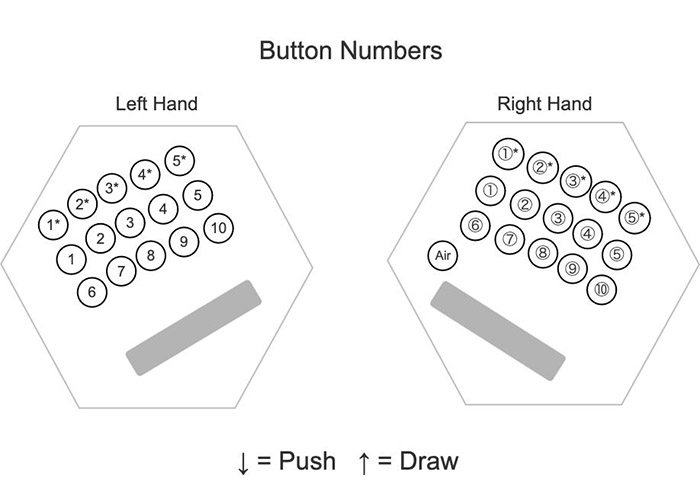

ABC Anglo Concertina Fingering Player Instructions
Credits
The visual design of the player's layout was inspired by several Anglo Concertina "Play Along" instructional videos by Ephraim Schafli.
Overview
Load, type, or paste ABC tunes and play the tunes with synchronized standard notation and Anglo concertina fingerings.
Choose Jeffries or Wheatstone concertina layouts and On-Row or either Cross-row fingering solution.
Play tunes with synchronized notation highlighting and a fingering diagram that shows the required button and Push or Draw direction.
Edit the ABC directly, click rendered notes to locate them in the editor, and use manual tablature overrides when you want to specify particular fingerings.
Load and work with multi-tune ABC collections, save your edited ABC, and create share links for one tune or the complete collection.
Use the resizable workspace and optional full-page fingering diagram for practice on desktop and mobile browsers.
Opening and Selecting Tunes
You can start by typing or pasting a single tune directly into the ABC text area, open an ABC file containing one or more tunes, or send a set of tunes directly from ABC Transcription Tools.
If more than one tune is loaded from a file, share link, or direct transfer, choose the tune from the Tune menu.
The ABC text area accepts only one tune at a time when pasting.
If a paste would put multiple tunes in the editor, the paste is not performed and a message asks you to save the tunes to a .abc file and load that file into the tool instead.
If you have unsaved ABC changes and choose a new ABC file, the tool warns that the existing work will be lost and asks you to confirm before the new file is opened.
Concertina and Fingering Settings
Select the Concertina type (Jeffries or Wheatstone) and Fingering solution (On-Row or either Cross-row option).
The button for the playing note is highlighted on its Upper Half for Push or Lower Half for Draw.
Red means Push and Green means Draw.
The bellows-direction arrow points Down for Push or Up for Draw.
These choices are remembered in this browser.
The fingering solution descriptions below are relative to C/G tuning.
On-Row:
Jim Van Donsel's original fingering solution, which favors the C-row:
Favors playing D' and E' on the right-side C-row.
For Jeffries-style instruments:
Favors right-side top-row 2nd button for C♯' and D♯'.
Cross-row (C5 on G-row draw):
A cross-row fingering solution favoring D5 and E5 on the left-side G-row, B4 on the right-side C-row first button draw, and C5 on the left-side G-row fourth button draw.
For Jeffries-style instruments, favors the right-side top-row 2nd button for C♯5 and D♯5.
Cross-row (C5 on C-row push):
A cross-row fingering solution favoring D5 and E5 on the left-side G-row, B4 on the right-side C-row first button draw, and C5 on the right-side C-row first button push.
For Jeffries-style instruments, favors the right-side top-row 2nd button for C♯5 and D♯5.
These are preferences rather than forced fingerings; the solver also considers finger transitions.
ABC Editing, Notation, and Fingering Display
The upper-left panel contains editable ABC and the lower-left panel shows the rendered notation and playback controls.
Editing the ABC rebuilds the notation, audio, and fingering solution.
Click a note head in the rendered notation to highlight it in red, select its associated note in the ABC editor, and immediately show that note's effective button and Push/Draw direction on the main Fingering Diagram without starting playback.
The complete ABC note token is selected, making it easy to replace the complete note or use Tab Override to change its fingering.
The Small / Medium / Large / Largest selector changes the ABC editor text size.
Medium is the default, and the selection is saved in this browser.
Click on any note head in the notation and then use ← and → below the instrument display to step through the notes without playback.
Leave Use arrow keys? checked at the lower right of the instrument panel to navigate with the Left and Right Arrow keys, or jump to the first or last note with Home or End (including compatible Bluetooth keyboard foot pedals).
This option is on by default. Your choice is remembered in this browser.
When enabled, unmodified Left and Right Arrow keys step through notes, and Home and End jump to the first and last notes of the tune.
These keys navigate notes instead of moving the ABC editor cursor.
Keyboard shortcuts are temporarily disabled while dialogs or controls that use these keys are active. When this option is enabled, the shortcuts also work while the ABC editor has focus.
Uncheck the option to restore normal arrow-key behavior.
Playback Range
Select one or more notes in the ABC editor, or click a note in the rendered notation to select it.
The previous and next note buttons can also select notes without rebuilding the player until you click Set Playback Range.
The Set Playback Range button in the ABC editor header becomes available when your selection includes notes.
Restore becomes available whenever a playback range or Phrase Builder result is active.
Click Set Playback Range to temporarily replace the visible ABC, notation, and audio with the selected passage while retaining the tune's complete header and preceding comments, directives, and ABC fields.
Any part of the selection within the tune header is ignored.
Use the normal Play and Loop controls to practice just that passage.
To narrow the passage further, select notes within the currently displayed range and click Set Playback Range again.
You can repeat this process to create smaller nested playback ranges without changing the preserved original tune.
You can edit the temporary ABC while a range is active, and its notation and audio will update as you type.
Any changes you make to the ABC within a playback range are temporary and are not saved when the full tune is restored.
Click Restore to discard temporary Playback Range or Phrase Builder edits and restore the entire original tune, not just the previous range.
Saving ABC, creating share or lesson links, and opening tunes in ABC Transcription Tools always use the preserved full tune rather than the temporary range.
Clicking the main Export PDF button automatically discards any temporary Playback Range or Phrase Builder result and restores the full tune before preparing the PDF.
Changing tunes or loading another ABC file also discards any temporary Playback Range or Phrase Builder result and its edits.
You can use Tab Tools to inject tablature into the temporary ABC while a playback range is active.
Tab Tools changes made inside a playback range are temporary and are lost when the range is cleared or the tune is changed.
You can apply Tab Override while a playback range is active.
Tab Override changes made inside a playback range are temporary and are lost when the range is cleared or the tune is changed.
Changing the concertina type or fingering solution clears the playback range and discards temporary edits.
If you cancel an instrument or tuning change that requires a tablature-removal confirmation, the current playback range and its temporary edits remain unchanged.
Phrase Builder
Phrase Builder creates a temporary call-and-response practice version of the ABC currently shown.
Choose the phrase length, extra rest measures, and number of times to repeat each phrase.
Your Phrase Builder settings are saved in this browser and are not included in share or lesson links.
Chord symbols are removed from the result.
You can first use Set Playback Range to select part of a tune, then use Phrase Builder on that passage.
After building phrases, Phrase Builder is disabled until you click Restore.
You can still use Set Playback Range as many times as you like on the phrase-built ABC.
Restore discards all temporary changes and brings back the complete original tune.
Saving, sharing, creating lessons, and opening a tune in ABC Transcription Tools always use the original tune.
Changing tunes or using the main Export PDF also restores the original ABC.
Phrase Builder cannot process tunes with V: voices or unsupported body-level ABC fields other than K:.
Cancelling Phrase Builder or entering invalid settings leaves the ABC unchanged.
Resizing the Panels
On wide screens you can drag the divider between the left and right sides to resize the ABC/notation area and fingering diagram.
Drag the divider between the ABC and notation panels to resize those two panels independently.
Double-click either divider to restore that divider to its original default position.
The divider positions are remembered in this browser and restored the next time the tool is opened on a wide screen.
Click Full-Page View on the ABC, Notation, or Fingering Diagram pane to expand it to the full browser window. Click Exit Full-Page to return to the normal pane view.
Playback and Tempo
The playback Loop setting is remembered in this browser and restored when you reopen the player (off by default).
As each melody note plays, the notation cursor follows the tune and the fingering diagram highlights the required concertina button.
Red means Push and Green means Draw.
Note names throughout the tool use sharps or flats according to the tune's K: key and mode.
Check Show note in the Fingering Diagram header to display the current pitch as a quarter note on a staff centered below the bellows-direction arrow.
Use Mode to choose Show All for an animated fingering display with all buttons fully visible, Focus to fade the button board while keeping the current button, highlight, note name, staff, and bellows direction fully visible, Diagram Only to see the labeled button layout and Push/Draw legend without note highlights, note names, note image, or bellows direction, or Hide All to hide the instrument display entirely. Diagram Only is useful for practicing with the button layout as a reference without seeing the fingering solutions.
The staff notation uses the same sharp or flat naming as the displayed note name.
Playback uses the ABC Transcription Tools custom concertina MIDI program 133 for the melody, and program 0 for bass and chords, overriding matching playback directives in the source ABC.
Check Metronome to add a meter-appropriate metronome click during playback. Changing this setting stops and rewinds the current tune. The metronome setting is remembered in this browser but is not included in share links.
Check Count in? to show a five-second countdown before playback starts when you click Play while playback is stopped.
The Count in setting is remembered in this browser.
Click Mute Melody in the Notation header to mute the concertina melody. This is available for every tune, including tunes without chord symbols, so you can practice with the metronome alone. If the tune contains chord symbols, chord and bass accompaniment remain audible.
Toggling Mute Melody or Unmute Melody stops and rewinds the tune. If it was playing, playback restarts from the beginning after the five-second count-in when Count in? is enabled, or immediately when Count in is disabled. If the tune was stopped, it remains stopped.
The button changes to Unmute Melody; click it again to restore the concertina melody.
The melody always starts unmuted when the tool is opened, and the mute setting resets to unmuted any time you change tunes or load a new tune collection.
Click Tempo in the Notation header to set playback tempo from 10% to 200% of the tune's original tempo. The value is remembered in this browser.
You can also click the tempo percentage box on the playback control bar:

Tab Tools (Add Tab / Clear Tab)
The Tab Tools button beside the Tune selector opens the Tablature Tools dialog for the current tune.
Add Tab inserts below-staff ABC fingering annotations using the current instrument settings and On-Row or Cross-Row fingering solution.
The injected tablature uses the same fingering solutions as the ABC Transcription Tools.
If the current tune already contains instrument tablature, Add Tab asks for confirmation before replacing it, including any manual tab overrides.
Clear Tab removes instrument tablature annotations from the current tune only, after confirmation.
Changing the instrument type or the selected fingering solution checks all loaded tunes for existing instrument tablature.
If any loaded tune contains tablature, the player asks for confirmation before clearing instrument tablature from every loaded tune that contains it.
Canceling the confirmation preserves all tunes and the previous instrument settings.
These changes mark the ABC as modified, so save the ABC file to keep them.
Tab Tools is available when running lessons.
Saving the ABC
Click Save to save the entire currently loaded tune collection, including edits made to any tune.
Edits are retained when you change tunes with the Tune menu.
On mobile devices, the file is saved with a .txt extension.
Showing All Fingerings for a Tune
Click All Fingerings in the Notation pane header to open a complete fingering sheet for the current tune in a new browser tab.
The separate printable sheet now includes its own Export PDF button, with the same Letter/A4 paper and portrait/landscape preferences as the main notation exporter.
The sheet uses the current instrument tuning and fingering solution, including any recognized tablature overrides, and displays left-hand button numbers plainly, right-hand button numbers circled, and top-row buttons with an appended *, followed by a colored bellows arrow (Red for Push, Green for Draw), and the note name.
It follows the rendered notation's staff breaks, barlines, repeats, and endings.
Print the new tab or save it as PDF using your browser.
All Fingerings supports single-voice melodies. Multiple voices, multi-note chords, and inline key changes are not supported. If notes cannot be matched reliably to the rendered melody, the sheet is not generated.
Share opens the Sharing Controls dialog. Choose Share Current Tune to create a share link for the currently displayed tune, or Share All Tunes to create a share link containing all loaded tunes.
Shortcut: Option/Alt-click Share to open the current tune directly in ABC Transcription Tools in a new browser tab, without opening the sharing dialogs.
The Sharing Controls dialog closes and the selected link opens in a Share Link dialog where you can copy it, save it as a text file, test it in a new browser tab, or open the ABC in the ABC Transcription Tools. Click Close to close the Share Link dialog.
The Mode display setting is a local preference and is not included in ordinary tune share links. A recipient uses their own saved Mode, or Focus if no preference has been saved.
The link includes the current Concertina type and Fingering solution. The fingering diagram always uses Button Half with Arrows.
Open in ABCTT opens the selected ABC in the ABC Transcription Tools ABC Editor in a new browser tab using the player's normal instrument-specific conversion settings. For a Lesson Share Link, lesson-only information is omitted and only the tune and applicable instrument settings are sent to ABC Transcription Tools.
A share button is disabled when its resulting link would exceed the maximum allowed of 8100 characters.
Opening a share link restores its Concertina type (Jeffries or Wheatstone) and Fingering solution (On-Row or either Cross-row option), and displays the first tune encoded in the link.
Settings received from a share link are used for that visit without changing your saved preferences. If you change any player setting, the current share-link settings become your saved preferences too. Opening a file with Browse loads its ABC only and does not change player settings.
When tunes are opened from a share link or transferred directly from ABC Transcription Tools, click the Click to Enable Playback button in the playback area before using the normal playback controls.
This user action allows audio playback to be initialized on browsers that require a user gesture before starting audio.
Practice with the ABC Transcription Tools Tune Trainer
To practice the current tune in the ABC Transcription Tools, first click Share in this player, choose Share Current Tune, and then click Open in ABCTT in the Share Link dialog. The tune opens in the ABC Transcription Tools in a new browser tab. Alternatively, Option/Alt-click Share to open the current tune directly in ABC Transcription Tools, skipping the Share dialogs.
Once the tune is loaded, click Train above the ABC editor pane to start the Tune Trainer. To practice the tune phrase-by-phrase, click Phrase Builder in the Tune Trainer.
To export an MP3 audio file of the tune, click Play in the ABC Transcription Tools, then click the Export Audio, Image, or PDF button in its Player and select the MP3 audio export option.
Tab Override
To choose a different fingering, click a note in the notation and open Tab Override.
The buttons show the concertina layout. Available choices are colored Red for Push or Green for Draw; unavailable buttons are greyed out. Click an available button to set its fingering and bellows direction together.
Use ← and → to move between notes. You can drag the popover to a convenient position.
Overrides are used when you click notes or play the tune, and are retained when you save or share the ABC.

Removing the Visual Design Watermark
By default, the Fingering Diagram displays a small Visual design by Ephraim Schafli watermark in the lower-right corner.
To suppress the watermark, add nowatermark=1 to the tool URL.
For example, use ?nowatermark=1 when it is the first URL parameter, or &nowatermark=1 when other URL parameters are already present.
If the tool is opened with nowatermark=1, Share Current Tune and Share All Tunes links created from the Share dialog also include that setting.
ABC Anglo Concertina Fingering Image Generator
If you would like to export a sequence of JPEG images for each note in a tune with the same options and fingering graphics as this tool, check out the:
ABC Anglo Concertina Fingering Image Generator
Export PDF
Use Export PDF to save the current tune as a PDF containing the notation and any displayed tablature.
If a Playback Range or Phrase Builder result is active, clicking the main Export PDF button first discards the temporary ABC and restores the full tune before preparing the PDF.
The tune title in the main notation PDF is clickable. Click it to open this tune in the ABC Transcription Tools Player with the current playback instrument settings. The separate All Fingerings PDF export is unchanged.
Choose Letter or A4 paper and Portrait or Landscape orientation.
By default, the PDF includes a centered Click the title to play instruction in the top margin of its first page. Uncheck Add "Click the title to play" on the first page header to omit it; the tune title and music do not move.
Each complete staff/tablature system stays together, with systems that do not fit moving to the next page.
For multipage tunes, page numbers appear centered at the bottom of each page.
A status dialog shows progress while the PDF is generated.
On an iPhone or iPad, tap Save PDF when the file is ready to open the iOS share sheet.
Choose Save to Files or another destination from that sheet.
On other devices, the PDF downloads automatically.
PDF export settings are saved locally and are not included in share or lesson links.
Printing Limitations
While running this tool, you can use your browser's Print feature to print the music notation displayed in the notation pane.
Tunes that are longer than one page may be cut off or clipped in the printout.
The browser's print scaling controls will not affect the size of the printed notation.
Experimenting with other paper sizes, such as Tabloid instead of Letter, may allow a longer tune to fit on a single page.
Manually setting larger left and right margins in the browser's Print dialog can often allow more staves to fit on a single page or possibly help with cleaner pagination.
Lesson Information for Music Teachers
Share opens the Sharing Controls dialog. Choose Configure Lesson… to create, edit, save, load, or share a lesson for your students.
A lesson uses the current tune only.
Enter a lesson title and instructions in the Configure Lesson dialog.
The lesson title and instructions are remembered in this browser while you work and are restored the next time you open Configure Lesson.
Save Lesson Configuration saves a reusable text file containing the current tune, lesson title, instructions, and the same player settings carried by a normal Anglo Concertina Player share link.
Load Lesson Configuration can open either a saved Lesson Configuration file or a Lesson Link saved as a text file.
Those saved player settings are Concertina type and Fingering solution.
You can also open a saved Lesson Configuration with the main ABC file Browse button. In this case, only the ABC tune is loaded; the lesson title, instructions, and saved player settings are not applied.
If one or more tunes are already loaded, the tool asks for confirmation before replacing them with the lesson tune.
Loading a lesson configuration restores its tune, lesson title, instructions, and saved player settings. The restored player settings also become your saved preferences for future use.
Unlike an ordinary tune share link, a lesson link includes the selected Mode so students begin with the intended display. Their Mode changes during the lesson are not saved as a preference.
Create Lesson Link creates a share link for the current tune containing the lesson title and instructions plus the same player settings carried by a normal share link.
The generated lesson link opens in the same Share Link dialog, stacked over the Configure Lesson dialog, where it can be copied to the clipboard, saved as a text file, tested in a new browser tab, or opened in the ABC Transcription Tools with lesson-only parameters removed. Click Back to close the Lesson Share Link dialog and return to Configure Lesson.
The Mode selector lets you choose how much help students initially see: Show All shows normal fingering highlights, note names, and bellows direction with all buttons fully visible; Focus fades the background buttons while keeping the active button and guidance at full strength; Diagram Only shows the labeled button layout and Push/Draw legend without revealing the active button or bellows direction; Hide All hides the instrument display completely. Your selection determines the starting mode in lesson links and saved lesson configurations. Students can change the mode during a lesson without affecting their normal saved preference.
Lesson Information for Students
Your music teacher may provide you with an Anglo Concertina Player lesson link.
Open the lesson link in your web browser to load the tune, lesson instructions, and the player settings chosen by your teacher.
Read the lesson information that appears, then click Start Lesson when you are ready to begin.
After clicking Start Lesson, click Click to Enable Playback to enable the audio playback controls.
The lesson setup controls and the lesson tune selector are shown at the top of the player but are initially disabled so the teacher's lesson setup cannot be changed.
The Browse and Save controls remain available while you are using a lesson, but the Share control is hidden so you cannot create share links or lessons.
You can use the normal notation, fingering diagram, playback, tempo, metronome, count-in, and full-page controls while working on the lesson.
You can edit the ABC if your teacher asks you to make changes.
Click Save to save your edited ABC.
You can use Browse to load a saved ABC file back into the player or open another ABC file. The lesson's player settings remain locked. After you load an ABC file, the tune selector is unlocked so you can select any tune in that file.
A lesson link includes the teacher's selected Mode. You may change Mode during the lesson, but these changes are temporary and do not overwrite your saved Mode preference. Outside lessons, changing Mode saves it for future visits.
Your teacher may choose the starting Mode for the lesson. Show All shows the full animated fingering display with all buttons fully visible; Focus dims inactive buttons while leaving the playing button and its guidance fully visible; Diagram Only shows the labeled button layout and Push/Draw legend without highlighting notes or showing bellows direction; Hide All hides the instrument display. You can change the mode at any time during the lesson without affecting your saved preference for normal use.
About
This tool was created by
Michael Eskin
If you find it useful, please consider a contribution via
Support Michael Eskin's Music Tools